Dynamics and hairpins
Overview
All dynamics symbols are to be found in the Dynamics palette:
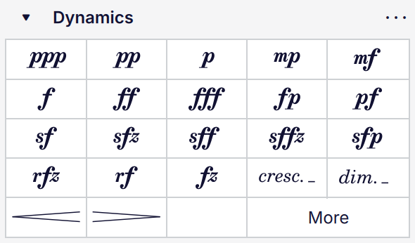
The Dynamics palette
This includes all the standard dynamics symbols (p, mf, ff, etc.) as well as gradual dynamic changes in the form of hairpins:
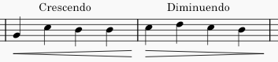
and in the form of cresc. and dim. text lines, which function in the same way but are more suitable for longer spans:
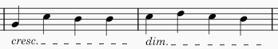
Unless stated otherwise, anything in this document that refers to hairpins also applies to cresc./dim. lines.
Adding dynamics and hairpins
From the palette
To add a dynamics symbol to the score, either:
- Select one or more notes, and then click an item in the Dynamics palette, or
- Drag an item from the Dynamics palette onto a note.
To add a hairpin to the score:
- Select the note(s) to which you wish to add a hairpin, by either
- selecting a single note; in this case, the hairpin will be drawn up to the next note, or
- selecting a range of notes or measures
- Add the hairpin by either
- clicking a hairpin in the Dynamics palette, or
- using the keyboard shortcuts
<to add a crescendo hairpin, or>to enter a diminuendo hairpin.
You can also drag a hairpin from the palette directly onto a note, in which case it will extend to the end of the measure.
The right-hand end of a hairpin is attached to the first note (or rest) _after_ the range to which you apply it, though it will be drawn to end just before that note. Therefore, do not include the final note in the range that you select.
From the dynamics popup
You can also add a dynamic via the dynamics popup:
- Select a note
- Type
Ctrl+D(Mac:Cmd+D) to open the dynamics popup - Click on a dynamic in the popup, or type it directly (e.g.
ppormf, etc.) and then pressEscor click on a blank area of the score, whereupon the text, if valid, will convert to a dynamic symbol.
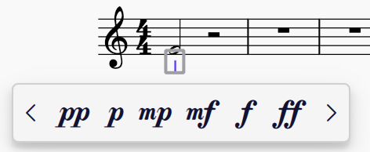
The dynamics popup
You can access more dynamics in the popup by clicking the left and right arrows.
With a dynamic selected, you can also create a hairpin directly from that dynamic by dragging the handle at the right of the dynamic out the note or anchor where you want it to end. When you let go, the dynamics popup will reappear, and you can select a new dynamic to go at the end of the hairpin. If that dynamic is of a lower level than the starting dynamic, the hairpin will switch from a crescendo to a decrescendo.
This makes it very quick and efficient to enter chains of dynamics and hairpins.
Replacing dynamics
When a dynamic is selected, you can easily replace it with another dynamic by either clicking a different dynamic in the Dynamics palette or in the dynamics popup. The new dynamic will replace the selected one.
Editing hairpins
Adjusting hairpin height
The handle at the bottom of the open end of a hairpin, here shown in gray as when selected, can be used to control its height:

To do so:
- Select the hairpin
- Select the height handle
- Drag the handle up or down, or use the
Up/Downarrow keys.
You can also adjust height via the Properties panel: see Hairpin properties.
Drawing at an angle
By default all hairpins are drawn level. To draw one at an angle, first ensure that the Allow diagonal box is checked in the Properties panel (in the Style tab). You will then be able to move the start and end handles of the hairpin independently on the vertical plane.
Assigning dynamics to voices
By default, dynamics are assigned to all voices on the instrument when they are entered. If you would prefer all dynamics to be assigned to the voice of the note to which they are applied, this is available as an option in Preferences -> Note input -> Voice assignment:
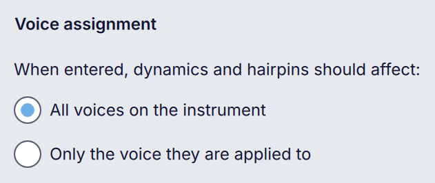
Changing this preference will not affect the assignment of any existing dynamics.
Regardless of this setting, you can assign a dynamic directly to a specific voice when you add it:
- Select a note or rest in the score
- Click on a dynamic in the Dynamics palette while holding
Ctrl(Mac:Cmd) - The dynamic will be assigned to the voice of the selected note or rest.
(Currently this does not work when dragging dynamics from the palette, or when using the dynamics popup. In these cases, dynamics will be assigned to all voices.)
You can change the voice assignment of an existing dynamic in multiple ways. Firstly, by selecting the dynamic and clicking one of the buttons in Properties -> Voice assignment:
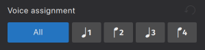
For instruments with multiple staves, clicking the the All button will open a menu with distinct options for
- All voices on this instrument (all voices on all staves of the instrument)
- All voices on this staff only (all voices on the staff to which the dynamic is attached)
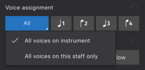
You can also either:
- Click one of the voice buttons in the top toolbar to assign to voices 1–4 (you cannot select All via this method), or
- Use the keyboard shortcuts:
- For voice 1–4:
Ctrl+Alt+1–4(Mac:Cmd+Opt+1–4) - For All:
Ctrl+Alt+0(Mac:Cmd+Opt+0)
For instruments with multiple staves, this last shortcut will apply the All voices on instrument option. For All voices on this staff only, use Ctrl+Alt+- (Mac: Cmd+Opt+-.
In playback, a dynamic affects its assigned voice(s) from the point at which it appears until another dynamic in the same voice, or a dynamic that affects all voices, is reached.
See the Dynamics playback compatibility to learn how the voice assignment feature works with different sound technologies.
Positioning dynamics and hairpins
There are three options available in Format → Style → Dynamics & hairpins → Default positions of dynamics and hairpins which control general dynamics positioning:

- Position determines whether dynamics should be positioned according to their voice assignment ('Based on voice', the default), or should all go 'Above' or 'Below'
- Place above the staff on vocal instruments specifies whether dynamics should go above the staff on vocal staves (on by default)
- Center on grand staff instruments automatically will center dynamics vertically between the staves of multi-stave instruments automatically (on by default).
Voice-based positioning
If the Based on voice position is chosen, voice assignment will affect the default position of dynamics as follows:
- Voice 1 dynamics go below the staff if there is only one voice at that rhythmic position, and otherwise go above
- Voice 3 dynamics go above the staff
- Voice 2 and 4 dynamics go below the staff
- Dynamics assigned all voices go below the staff
The position of any dynamic can be explicitly overridden via Properties → Position.
If **Place above the staff on vocal instruments** is turned on then, on vocal staves, dynamics assigned to voice 1 will go above the staff, as will dynamics assigned to all voices on the staff. Voice 2 and 4 dynamics will still go below.
Centering dynamics between staves
Dynamics on grand staff instruments (e.g. keyboards, keyboard percussion, harp) can be centered vertically between the staves.
If the Center on grand staff staves automatically option is turned on,
By default, dynamics are automatically centered (i.e. when when:
- There is a staff on the same instrument above or below the dynamic (according to its position relative to the staff to which it is attached) against which it can be centered
- Properties -> Voice assignment is set to All voices on instrument
- Properties -> Center between staves is set to Auto
- In Format -> Style -> Dynamics & hairpins, the Center on grand staff instruments automatically option is on
- No manual Y-offset has been applied to the dynamic.
You can also manually center dynamics by setting Center between staves to On and configuring Position based on whether the staff to which you want to center is above or below.
Avoiding barlines
Dynamics are centered under the note or rest to which they are attached. In the case of longer dynamics such as ppp this can easily mean that they would collide with a barline that precedes or follows them, when there is a barline connecting to the staff below. By default, dynamics items will be offset to the left or right to avoid these collisions. This behaviour can be turned off globally (Format -> Style -> Dynamics & hairpins -> Avoid barlines), or for a specific item via the Properties panel.
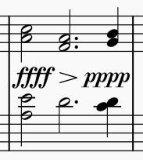
Avoid barlines on
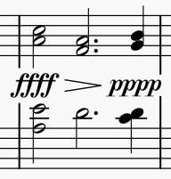
Avoid barlines off
The second image shows the result if this option is turned off, but text masking is turned on (Format -> Style -> Barlines -> Mark barlines with intersecting text). If this option were also turned off, the barlines would be drawn over the top of the dynamics.
If the dynamic has additional text typed before or after it, this is also included in the barline avoidance. See Text as part of a dynamics item for details.
Moving dynamics and hairpins
Dynamics, and the endpoints of hairpins, do not have to be attached only to notes or rests, but can be moved to rhythmic positions within longer durations. See Anchors and also Changing the range of a line.
If a dynamic has a hairpin snapped to it on either side or both, the endpoints of these hairpins will follow the dynamic as it is moved around. See Snapping and alignment.
Snapping and alignment
If a piece of Expression text is at the same position as a dynamic, and has the same voice assignment and the same position setting (above/below), the two items will snap together, with the expression positioned after the dynamic. If either item is moved, the other will follow.
To decouple a piece of Expression text from a dynamic:
- Select the text
- Go to the Properties panel
- Under Expression, uncheck Align with preceding dynamic.
You can then move the items independently of each other.
If you want to disable this snapping behaviour entirely, uncheck Format -> Style -> Expression text -> Snap to dynamics.
If a hairpin starts and/or ends at the same position as a dynamic, and has the same voice assignment and the same position setting (above/below), the hairpin will automatically vertically align with the dynamic(s) at either end.
To disable this behaviour for a specific hairpin:
- Select the hairpin
- Go to the Properties panel
- Under Expression, in the Position tab, uncheck Snap to previous (to disable alignment with any dynamic at the beginning of the hairpin) and/or Snap to next (to disable alignment with any dynamic at the end).
Flipping the position of a snapped or aligned item to the other side of the staff, or changing the voice assignment of either item, will automatically stop it from snapping or aligning.
Combining dynamics and text
There are two ways to combine dynamics and text together, and there are subtle but important differences between them.
Dynamics and expression text
Where a dynamic is followed by an expressive marking, for example p dolce or f espress., it is best to input the dynamic and the expression text as separate items. The two will automatically snap together (see Snapping and alignment).
The quickest way to add expression text to a dynamic in this way is:
- Enter a dynamic into the score via any method (the dynamic will be selected once it is entered)
- Click the expression item in the Text palette, which adds a piece of expression text after the dynamic
- Edit the expression text as necessary (assuming the text is selected, which it will be after it is entered, simply press
Enterto go into editing mode).
You can also input them the other way round (expression, then dynamic), though the expression will still be placed after the dynamic.
The cresc./dim. text lines can be added to a dynamic in exactly the same way, and will snap to the dynamic, as will hairpins.
Text as part of a dynamics item
If the text is part of a dynamic phrase, for example più p or f sub., it is usually best to type these directly into the dynamic, so that it is treated as a single item. This is also the only way to put text before the dynamics symbol, as expression items are always placed after the dynamic when snapped.
- Double click the dynamic, or select it and press
Enter, to go into editing mode - Use the cursor keys to move to the start or end of the item (if necessary)
- Type in the text.
Any text typed into a Dynamic item is styled as Expression text, and is scaled independently of the dynamics symbols.
When Avoid barlines is turned on, this applies to the entirety of a dynamics item, including any text which is typed into the item itself. It does not apply to any expression item that may be snapped to the barline. Consider the difference between these two examples:
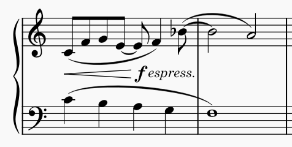
Dynamic with text typed after it
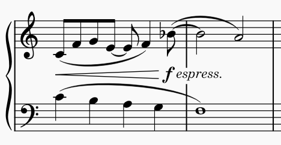
Dynamic with separate expression item
In the former case, the barline avoidance pushes the text to the left and the dynamic appears as though it applies earlier than intended. This is one reason why it is often preferable to use separate expression text rather than adding text after a dynamic directly.
When a dynamics item includes text, you can also choose whether the dynamic should remain centered under the note with the text extending out to the left and/or right (this is the default), or whether the whole item should be centered. These options are available in the Properties panel, in the Dynamics section under Show more:

The icons illustrate the difference between the two options. This has no effect when a dynamic has an piece of expression text attached to it.
Properties
Individual dynamics and hairpins can be edited via the Properties panel. To edit the score-wide settings, see Style.
Dynamics properties
For dynamics, the following options are available:
- Scale: the size of the dynamics symbol, as a percentage relative to default
- Avoid barlines: whether dynamics should automatically be offset left or right to avoid collisions with barlines (see Avoiding barlines)
- Voice assignment: to which voice the selected dynamic is assigned; this can affect both its position and also playback; the default is All (see Assigning dynamics to voices)
- Position: whether the dynamic should be positioned above or below the staff; the default, Auto, means that the position will be determined by voice assignment
- Center between staves: on instruments with more than one staff, whether the center the dynamic between the staff to which it is attached and the next staff; the default, Auto, means that this will be determined by voice assignment (if the voice is set to anything other than All voices on instrument, the dynamic will not be centered)
Under Show more:
- Alignment with notehead: how to align a dynamics item which has additional text in it; see Text as part of a dynamics item for details
- Border: allows you to draw a square or round border around the item. The usual additional border settings will appear if either is chosen.
If the dynamics item has additional text typed into it, there will also be a Text heading which contains the usual text properties (font, style, size, etc.) These settings will only affect the text, not any dynamics symbols.
Hairpin properties
For hairpins, the following options are available:
Position
- Voice assignment: to which voice the selected dynamic is assigned; this can affect both its position and also playback; the default is All (see Assigning dynamics to voices, below)
- Position: whether the dynamic should be positioned above or below the staff; the default, Auto, means that the position will be determined by voice assignment
- Alignment with adjacent dynamics
- Snap to previous: if this is checked, then if there is a dynamic at the start of the hairpin, with the same voice assignment, the hairpin will be drawn starting just after the dynamic (and any expression text that is snapped to it), and vertically aligned with it
- Snap to next: if this is checked, then if there is a dynamic at the end of the hairpin, with the same voice assignment, the hairpin will be drawn ending just before the dynamic, and vertically aligned with it.
Style
These options are available for hairpins specifically. For _cresc._/_dim._ lines the options are instead the same as for other text lines: see [Line properties](%1).
- Niente circle: draws a small circle at the point of the hairpin to indicate niente (coming from or going to nothing)
- Allow diagonal: allow the hairpin to be angled (see Drawing at an angle)
- Thickness: the thickness of the line
- Height: the height of the open end of the hairpin (see Adjusting hairpin height)
- Height (new system): the height of the opening of the hairpin at the start of a new system, when it crosses a system break.
Text
These settings are the same as for text lines: see Line properties.
Style
See the main chapter Templates and styles
Format -> Style -> Dynamics & hairpins contains options for the default positioning, spacing, and appearance of dynamics and hairpins.
You can edit the expression text style (which affects Expression text items and also any normal text typed into Dynamics items) in **Format → Style → Text styles → Expression**.
Default positions of dynamics and hairpins
See Positioning dynamics and hairpins.
Dynamics
- Override score font: dynamics are usually taken from the music font (as specified in Format -> Style -> Score -> Musical symbols font). If you want to use a different font for dynamics only, check this box, and then select your desired font from the Font dropdown
- Avoid barlines: whether all dynamics should be offset to avoid barlines by default (see Avoiding barlines)
- Scale: the size of dynamics symbols, as a percentage relative to default
- Offset above/below: the default vertical position of dynamics above and below the staff
- Autoplace min. distance: the minimum distance between a dynamic and the staff, or an item between it and the staff.
Though dynamics look like text, and are frequently used alongside text, they are better considered as musical symbols like any other (clefs, noteheads, etc) and in any given music font are designed at a certain size appropriate to the other symbols in the font. This is why the **Scale** setting is not expressed in points, but as a percentage, where 100% represents 'the size at which they are designed'.
Hairpins
- Offset above/below: the default vertical position of hairpins above and below the staff
- Height: the default height of the open end of hairpins
- Continue height: the default height of the opening of hairpins at the start of a new system, when they cross a system break
- Autoplace, distance to dynamics: the distance between the end of a hairpin and a dynamic
- Line thickness: the default line thickness.
Dynamics playback compatibility
Support for voice-specific dynamics varies depending on the sound technology chosen (e.g. SoundFont, VST, or Muse Sounds) and whether the instrument is a single-note-dynamic instrument (i.e. an instrument capable of changing its dynamic on a single note, such as the violin or flute) or a non-single-note-dynamic instrument (e.g. the piano or percussion instruments, where the instrument's dynamic properties begin to recede after a note's initial attack).
In the below table, single-note-dynamic instruments are referred to as SND instruments, while non-single-note-dynamic instruments are referred to as non-SND instruments.
| Sound technnology | Support for individual voices/staves |
|---|---|
| Muse Sounds | Full support for per-voice and per-stave dynamics. |
| SoundFont (MS Basic) | Both SND and non-SND instruments will support dynamics on individual voices. Only non-SND instruments will support dynamics on individual staves. |
| VST | Only non-SND instruments support per-voice and per-staff dynamics. |